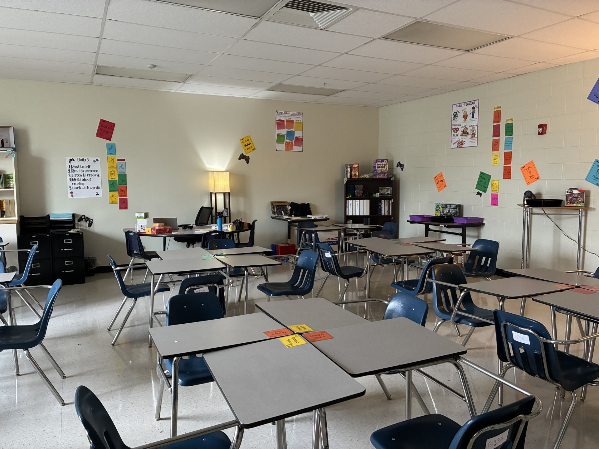
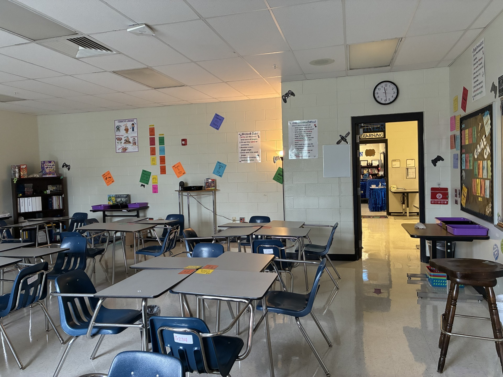

Reflecting on the Profession
For the last ten years I helped to empower young minds. Like many other teachers, I enjoy working to impart the knowledge middle schoolers need to become well-rounded people. My students are from a variety of backgrounds. I strive to be inclusive in my practice, where all students who want to learn are welcome. I take immense pride in the growth my students display as they progress throughout the year.

One of my proudest moments as a teacher comes when students discover the versatility of language. My classroom uses inqury based learning, where students uncover how authors use strategies to develop writing. Guiding middle schoolers is strenuous. They get off topic easily, making each lesson a split between learning and discussion. Through these interactions, students learn to work through difficult learning together. Success is built off little failures, where each one presents a new option for completing a task. My students find themselves the arbitures of their own learning, setting them up for success in the future.
Teaching Philosophy
As a teacher, my hope is to give students the knowledge they need to become productive, well-rounded individuals. My classroom uses a hands on, autonomous structure where students become the leaders of thier own learning. Early on they are taught how to manage their time, work with others, and track their own progress. Learning to use the skills aquired in elementary, middle schoolers put their knowledge to work. Together we analysis structure and content for students to produce similar effects in their writing. Moreover, students learn to draw conclusions and apply critical thinking to subjects that interest them. These skills provide a foundation for their future learning.

To my greatest amazement, one of my warmest teaching moments continues to be when I am out and about in my community. Throughout the years, encounter former students excitied to share their recent victories and accomplishments. I regularly find them making a difference to the community in a variety of ways. From the local community centers to grocery stores, it’s wonderful to see my students become productive and well-rounded members of society. My great joy is seeing them succeed as young adults, in all their endeavors.